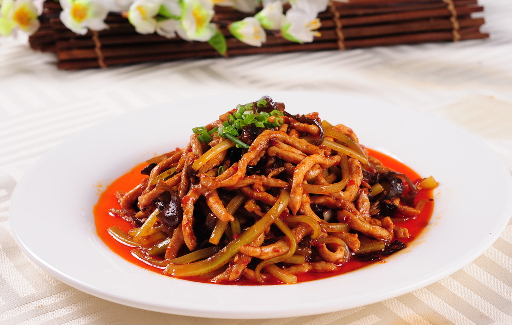
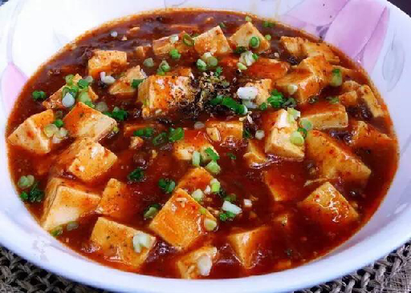
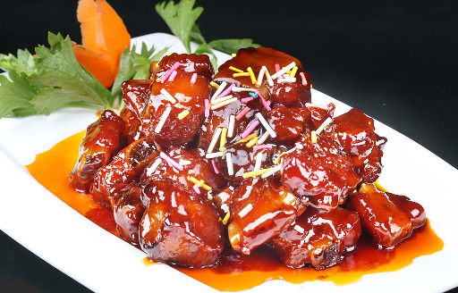
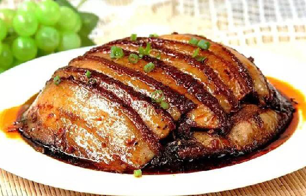

鱼香肉丝（英文名：Stir-fried Pork Strips in Fish Sauce）是一道特色传统名菜，以鱼香调味而得名。相传灵感来自老菜泡椒肉丝，民国年间由四川籍厨师创制而成。主料为猪肉、黑木耳，辅料因做法而各异，但多为胡萝卜、竹笋、辣椒等。猪肉选用三成肥、七成瘦的切丝滑炒，吃起来肉丝质地鲜嫩。成菜色红润、肉嫩、质鲜、富鱼香味。其鱼香味并不来自鱼，而是由泡红辣椒、葱、姜、蒜、糖、盐、酱油等调味品调制而成。“鱼香”与“余香”谐音，另一种说法是“余香肉丝”。余香系列的川菜，最主要的辅料是四川辣豆瓣酱。主料配以四川辣豆瓣酱加上其他调料烧出来的菜肴，其味厚重悠长，余味缭绕，回味无穷，故称余香。上世纪七十年代之前，餐馆菜单上书写的有“余香肉丝”菜名。
鱼香肉丝
>>> Posted by Admin - 01/01/2012 - 0 Comments

麻婆豆腐
>>> Posted by Admin - 01/01/2012 - 0 Comments

麻婆豆腐（英文名：Mapo Tofu）也称为陈麻婆豆腐，是四川省地方传统名菜之一。制作原料主要有豆腐、肉末、辣椒和花椒等。麻婆豆腐始创于清代同治年间，由成都万福桥“陈兴盛饭铺”老板娘陈刘氏所创。因她脸上有几颗麻子，故称为麻婆豆腐。麻婆豆腐外观色深红亮，红白绿相衬，豆腐形整不烂，吃起来具有麻、辣、烫、嫩、酥、香、鲜等风味，突出了川菜“麻辣”的特点。麻婆豆腐始创于清朝同治元年（1862年）。在成都万福桥边，有一家原名“陈兴盛饭铺”的店面。店主陈春富早殁，小饭店便由老板娘经营，女老板面上微麻，人称"陈麻婆"。当年的万福桥是一道横跨府河，常有苦力之人在此歇脚、打尖。光顾饭铺的主要是挑油的脚夫。陈氏对烹制豆腐有一套独特的烹饪技巧，烹制出的豆腐色香味俱全，不同凡响，深得人们喜爱，她创制的烧豆腐，则被称为“陈麻婆豆腐”，其饮食小店后来也以“陈麻婆豆腐店”为名。
糖醋排骨
>>> Posted by Admin - 01/01/2012 - 0 Comments

糖醋排骨(Sweet and Sour Spare Ribs)是糖醋味型中具有代表性的一道大众喜爱的特色传统名菜，它选用新鲜猪子排作料，肉质鲜嫩，成莱色泽红亮油润。沪，浙，川，淮扬四个菜系中都有这个菜。沪菜用料简单注重的是酸甜的口味里面用到了番茄酱 这也是沪菜的特点，浙菜用料丰富，做法精细，色、香、味具全，川菜即使做糖醋排骨也不忘加葱姜花椒 。糖醋排骨的调配汁只有沪菜会加番茄酱，沪菜口味偏淡 ， 浙菜和川菜偏重 。沪菜浙菜的糖醋排骨属于烧菜，而川菜中的糖醋排骨 是四川一道很有名的凉菜，用的是炸收的烹饪方法，属于糖醋味型，琥珀油亮，干香滋润，甜酸醇厚，是一款极好的下酒菜或是开胃菜。颇受中国人民喜爱。淮扬菜的糖醋排骨在技法上兼顾了浙菜的和川菜的特点，口味上结合沪菜的特点，用糖醋，葱蒜调味，用油热煸，淮扬菜做法的糖醋排骨历史较其余三个菜系较短。
梅菜扣肉
>>> Posted by Admin - 01/01/2012 - 0 Comments

梅菜扣肉（英文名：Pork with salted vegetable）也称为咸烧白，是特色传统名菜，属粤菜客家菜，其中以广东梅州最具代表性。通常是将五花肉上汤锅煮透，加老抽，油炸上色，再切成肉片。之后加葱、姜等调料炒片刻，再下汤用小火焖烂，五花肉盛入碗里，上铺梅菜段，倒入原汤蒸透。走菜时，把肉反扣在盘中。成菜后，肉烂味香，吃起来咸中略带甜味，肥而不腻。据传，中原汉人南迁后，生活贫寒，很多人从事体力活，劳动强度大。平时一般很少荤食，而肥腻一点的食品能有效充饥。他们吃的菜，口味偏咸，用的酱料较为简单，一般仅用生葱熟蒜、香菜调味。客家人将五花肉加上配料进行制作，再将肉垫在梅菜干上蒸煮，制作了一道色泽油润、香气浓郁的美味佳肴。时过境迁，这种菜肴逐渐名扬四海，就是我们时常品尝到的“梅菜扣肉”。